Mechanizm, który zbiera dane o AED od dysponentów w jeden otwarty zbiór na dane.gov.pl.
Na start: dane 74 urządzeń z czterech miast, zebrane z plików w czterech różnych układach. Mechanizm działa w oficjalnym kodzie portalu, więc operator niczego nie buduje od zera.
HackNation 2026, zadanie „Misja AED - Dane na ratunek” Ministerstwa Cyfryzacji Zespół jednoosobowy. Kod: github.com/PatrickMade/hacknation-2026-aed
mcod.local/pl/aed, strona akcji w lokalnej kopii portalu
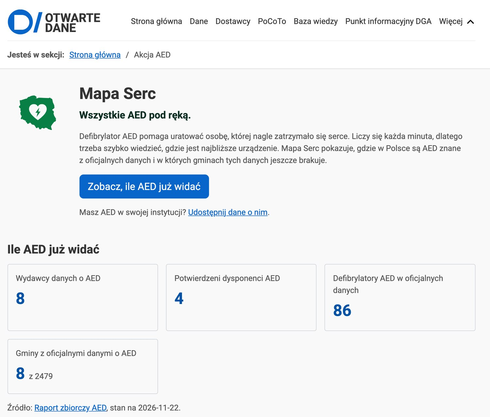
Zrzut z działającego prototypu. Strona akcji Mapa Serc wewnątrz portalu; liczniki czyta z Raportu zbiorczego AED. Adres mcod.local to kopia portalu dane.gov.pl uruchomiona lokalnie.
Kryterium oceny: zgodność z tematem wyzwania, waga 15%
Gdy serce staje, liczy się minuta. A dziś nikt nie wie, gdzie są wszystkie AED.
Świadek zatrzymania krążenia potrzebuje defibrylatora w kilka minut. Wytyczne ERC 2025 zalecają, żeby wszystkie publicznie dostępne AED były w rejestrze1. W otwartych danych państwa takiego rejestru dziś nie ma.
3-6%
mniej szans na przeżycie z każdą minutą bez defibrylacji1
18 298
punktów AED w Polsce znają wolontariusze OpenStreetMap2
74
Tyle AED ma dane do pobrania w dane.gov.pl: cztery miasta, cztery układy pliku3
1 Wytyczne Europejskiej Rady Resuscytacji 2025, „Podstawowe zabiegi resuscytacyjne u dorosłych”, wyd. polskie (prc.krakow.pl), s. 21 pliku PDF: spadek szans na przeżycie do wypisu ze szpitala u pacjentów z rytmem do defibrylacji. 2 Eksport OpenAEDMap dla Polski z 21.11.2026, ODbL. 3 Zbiory 3624, 4955, 4581 i 40593 w dane.gov.pl, kopie z 21.11.2026.
2 / 15
Kryterium oceny: zgodność z tematem wyzwania, waga 15%
Pięć miast ma zbiór o AED w dane.gov.pl. Każdy plik czyta się inaczej, a jeden nie ma danych do pobrania. W Mapie Serc układ jest jeden.
Dziś: prawdziwe początki plików z dane.gov.pl
Krosno (CSV, zbiór 3624)
Długość geograficzna,Szerokość geograficzna, Nazwa, Lokalizacja, Adres, Numer Id
Marki (CSV, zbiór 4955)
"52.326697, 21.107557,""Defibrylator"",""Urząd Miasta Marki "",..."
Cały wiersz w jednej komórce; pod nagłówkiem „Długość” stoi szerokość.
Rekord z API lokalnego portalu (fragment). Każdy rekord mówi, kto opublikował dane, skąd pochodzą i na jakiej licencji.
dysponent→kreator→walidator→zbiór dysponenta→Raport zbiorczy AED→mapa i API portalu→kod QR przy AED→zgłoszenie do dysponenta
3 / 15
Kryterium oceny: zgodność z zasadami dane.gov.pl, waga 30%
Krok 1. Dysponent wgrywa swój plik w panelu dostawcy. Kreator dopasowuje kolumny i sprawdza dane.
admin.mcod.local/aed/kreator/kolumny/
Plik w układzie miasta. Kreator sam proponuje, która kolumna to szerokość, długość i nazwa. Dla pola wymaganego bez kolumny dysponent wybiera wartość dla całego pliku albo „unknown”.
admin.mcod.local/aed/kreator/raport/
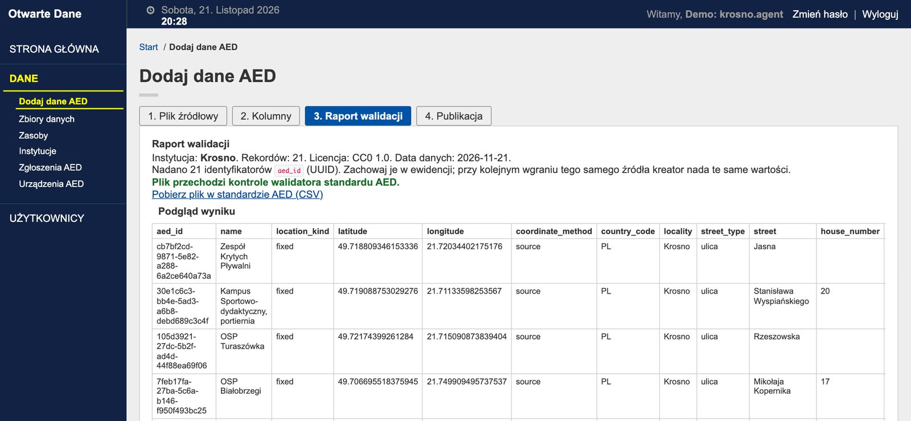
ten sam ekran, niżej: publikacja
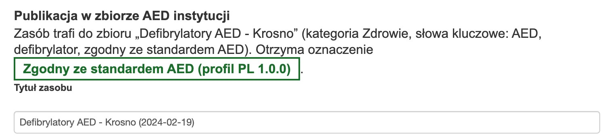
21 rekordów zgodnych. Zasób trafia do zbioru instytucji z kategorią Zdrowie i oznaczeniem „Zgodny ze standardem AED”. „Data danych” to w demo dzień wgrania; dysponent wpisuje datę swojego pliku.
Kryterium oceny: zgodność z zasadami dane.gov.pl, waga 30%
Krok 2. Portal składa z tych plików Raport zbiorczy AED: zbiór z opisem, dostawcą i trzema zasobami.
mcod.local/pl/dataset/6,raport-zbiorczy-aed
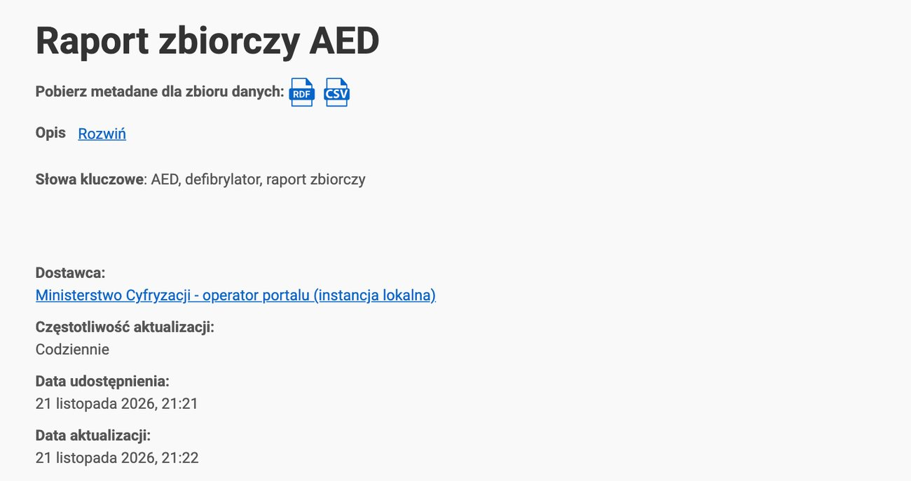
Strona zbioru. Opis mówi wprost, czego źródła nie podają. Na zrzucie widać też sprawy otwarte: zbiór nie ma jeszcze kategorii, a częstotliwość „Codziennie” opisuje zadanie w kodzie, nie ręczne odświeżanie w demo. Stan każdej zasady: załącznik A.
ta sama strona: zasoby zbioru
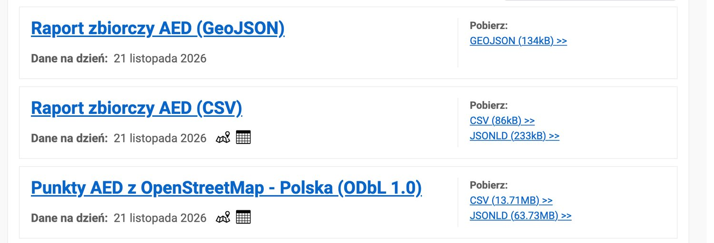
mcod.local/pl/dataset/6/resource/6
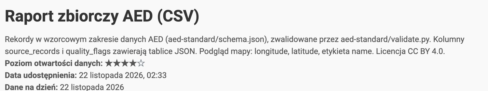
Zasób CSV: 4 z 5 gwiazdek otwartości. Piąta wymaga powiązania z innymi zbiorami (linked data).
5 / 15
Kryterium oceny: zgodność z zasadami dane.gov.pl, waga 30%
Krok 3. Te same rekordy widać na wbudowanej mapie portalu i w jego API, bez osobnej aplikacji.
mcod.local/pl/dataset/6/resource/6/map
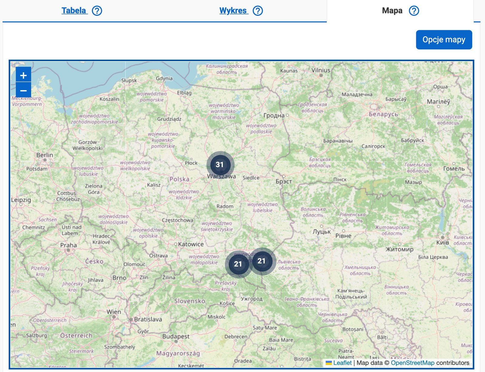
73 z 74 rekordów na mapie. Jeden rekord nie ma współrzędnych, więc jest tylko w tabeli i w API. Mapa to zwykła zakładka zasobu w portalu.
GET api.mcod.local/1.4/resources/6/data?per_page=1
"count": 74
"name": "Szkoła Podstawowa nr 2"
"locality": "Marki"
"latitude": 52.340344, "longitude": 21.113589
"operator_name": "Urząd Miasta Marki"
API portalu zwraca rekordy w polach wzorcowego zakresu, a metadane zbioru w RDF ze słownikami DCAT (obie odpowiedzi w skrócie). W polu operator_name stoi dziś wydawca pliku źródłowego.
Polecenie seed_aed_showcase dodaje do zakładki PoCoTo wpis „Najbliższy AED”: tę samą mapę z filtrem odległości od podanego adresu.
6 / 15
Kryterium oceny: kreatywność i innowacyjność, waga 15%
Mapa luk mówi, kogo zaprosić najpierw: w 2123 gminach AED zna tylko OpenStreetMap.
mcod.local/pl/aed, sekcja „Gdzie brakuje danych o AED”
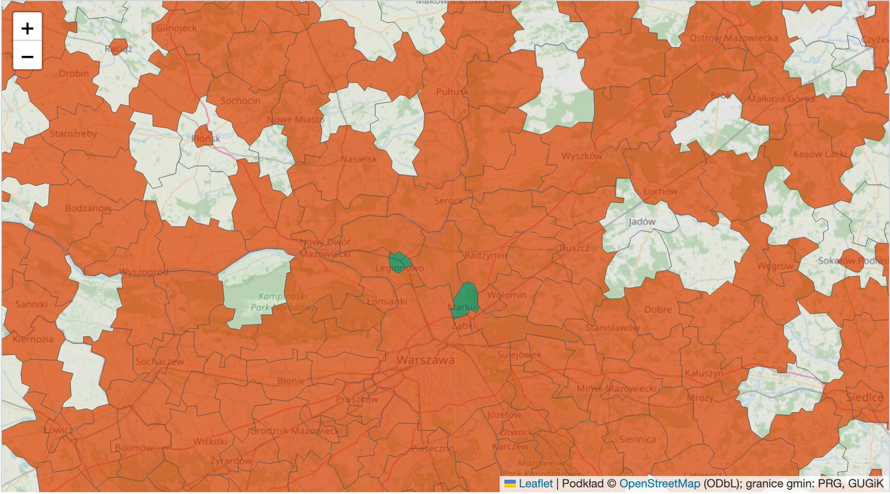
Okolice Warszawy. Zielone: Legionowo, Marki i Wieliszew, gdzie leżą dwa punkty z pliku Legionowa; dlatego instytucje są 4, a gminy 5. Warszawa jest pomarańczowa: ma zbiór w portalu, ale dane tylko przez miejskie API z kluczem.
Lista do zaproszenia: AED w OSM, brak pliku w otwartych danych
Warszawa
1078
Wrocław
403
Kraków
353
Poznań
346
Gdańsk
272
Strona akcji liczy to z dwóch zasobów portalu i pokazuje pełną tabelę 2123 gmin. Gdy dysponent opublikuje dane, jego gmina zmienia kolor na zielony.
ta sama strona, sekcja „Ile AED już widać”
Stan lokalnej kopii portalu z 21.11.2026: 5 gmin z oficjalnymi danymi, 2123 z lukami, 351 bez danych z obu źródeł (razem 2479). Granice gmin: PRG, GUGiK.
7 / 15
Kryterium oceny: kreatywność i innowacyjność, waga 15%
Kod QR na naklejce prowadzi do karty urządzenia. Zgłoszony problem trafia wprost do jego dysponenta.
1Karta urządzenia w barwach akcji
mcod.local/pl/aed/5b0c…
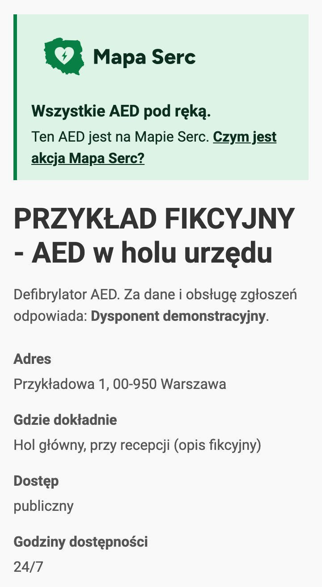
2Zgłoszenie w minutę
formularz na karcie
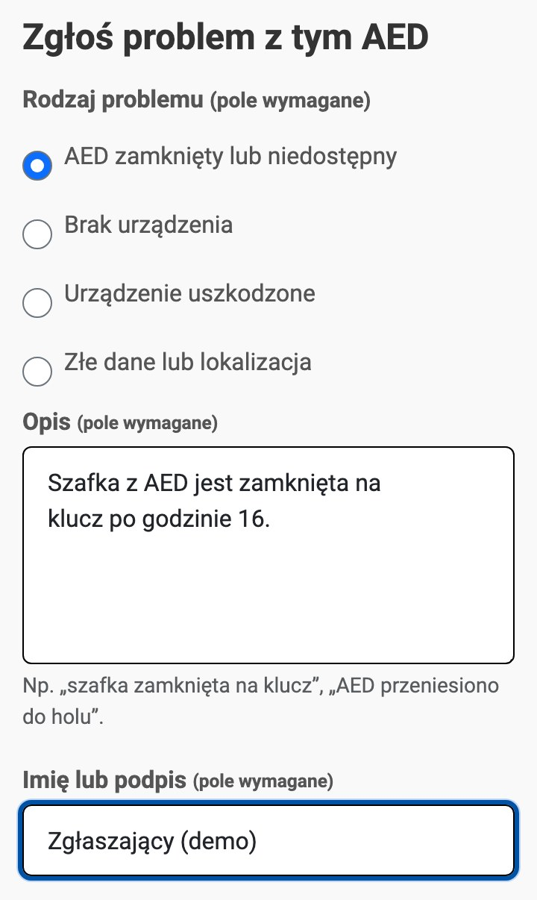
3Zgłoszenie widzi tylko instytucja, która odpowiada za ten AED, i dostaje e-mail
admin.mcod.local/aed_reports/aedincidentreport/
e-mail do dysponenta, lokalna skrzynka testowa
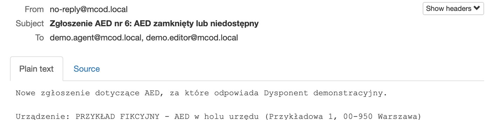
W demo pętla działa na 5 fikcyjnych urządzeniach; urządzenie i zgłoszenia na zrzutach są fikcyjne. Przycisk „Zgłoś problem” jest pod danymi urządzenia. Formularz nie zastępuje numeru 112. Kontakt jest opcjonalny; podpis i kontakt są usuwane 30 dni po rozwiązaniu zgłoszenia. Treść informacji o danych to wzór do weryfikacji prawnej.
8 / 15
Kryterium oceny: wzorcowy zakres danych, waga 10%
Wzorcowy zakres danych ma 43 pola, w tym 15 wymaganych. Kontrola jakości znajduje błędy w prawdziwych plikach.
Grupa pól
Pola
Wymagane
Przykłady
Identyfikacja
3
3
aed_idnamelocation_kind
Miejsce
18
3
latitudelongitudetercstreetindoorlevel
Dostępność
6
2
accesslockedopening_hours
Urządzenie i dysponent
10
2
operational_statusoperator_namepads_expire_on
Wiarygodność i pochodzenie
6
5
verification_methodsource_recordsquality_flags
Razem
43
15
oraz 3 warunkowe (np. współrzędne dla stałego miejsca) i 25 opcjonalnych
Słownik aed-standard/field-dictionary.xlsx opisuje każde pole: polska etykieta, typ, czy wymagane, format, przykład i opis. Obok: Table Schema, szablon CSV i walidator z testami. Podział na grupy porządkuje tylko ten slajd.
Co wykryła kontrola jakości w 74 rekordach raportu
niepełny kod TERYT
24
wiersz w jednej komórce
8
zamienione osie
7
możliwy duplikat
4
punkt poza gminą
1
Wynik zapisuje pole quality_flags każdego rekordu.
admin.mcod.local/aed/sprawdz-plik/
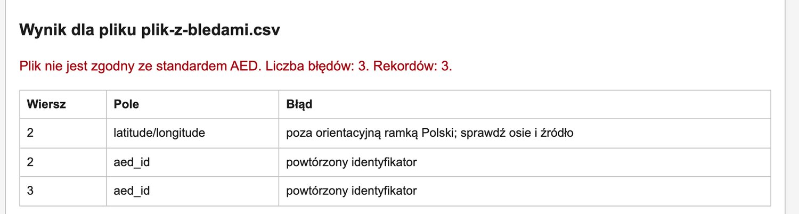
Publiczny walidator wskazuje błąd do wiersza i pola, bez logowania.
Czego dane jeszcze nie mówią: w 74 z 74 rekordów dostęp, stan urządzenia i rodzaj lokalizacji mają jawną wartość „unknown”, bo źródła ich nie podają; brakujących wartości nie zgaduję. Pola oparto na tagach AED w OpenStreetMap, identyfikatorach TERYT i standardzie technicznym portalu; to propozycja, nie obowiązujący standard.
9 / 15
Kryterium oceny: logotyp i hasło, waga 25%
Znak to mapa Polski z sercem AED. Hasło mówi, po co ta mapa: „Wszystkie AED pod ręką.”
Każde urządzenie udostępnione w dane.gov.pl staje się sercem na wspólnej mapie. Zieleń pochodzi z oznakowania AED.
To nie jest oznaczenie AED. Białe serce z błyskawicą na zielonym kwadracie wskazuje miejsce urządzenia. Mapa Serc wpisuje serce w kontur kraju i oznacza akcję oraz jej mapę.
#087F45#0B2E20#DDF3E6#FFFFFF
Na stronie akcji w portalu dane.gov.pl
mcod.local/pl/aed
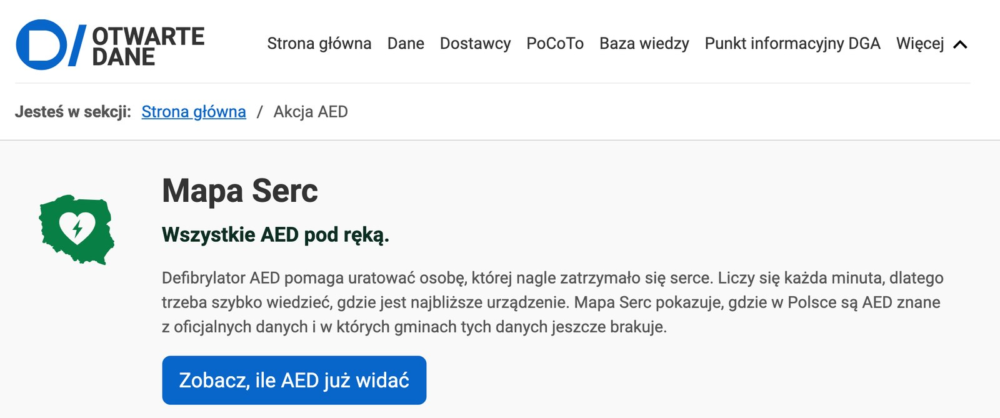
Symbol w wysokości 48, 24 i 16 px. Minimum z księgi znaku to 16 px.
Księga znaku (PDF, 10 stron)
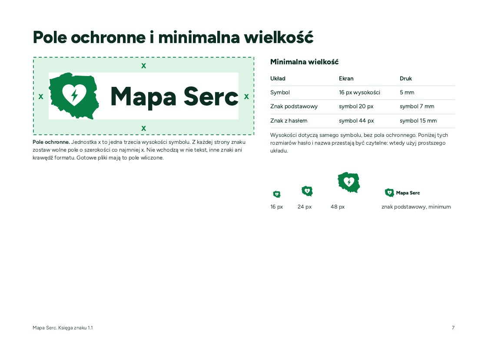
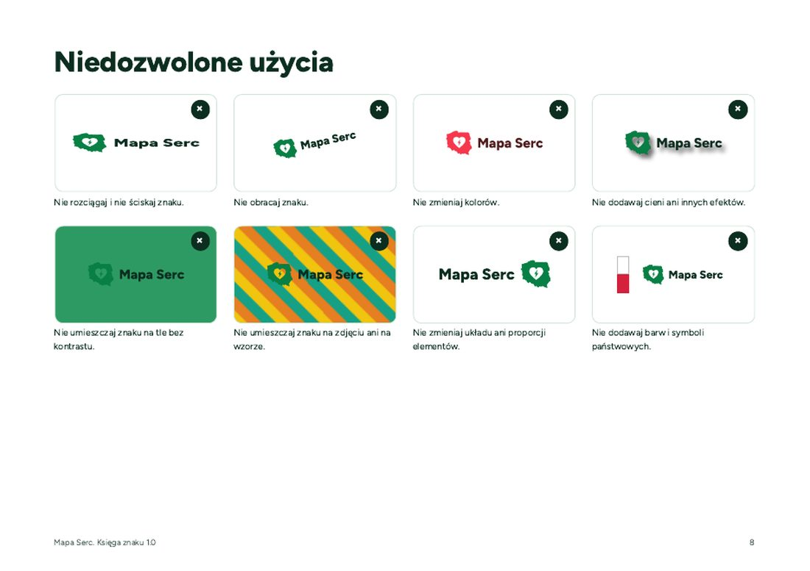
Strony o polu ochronnym i niedozwolonych użyciach. W brand/: 3 układy w 3 wersjach, każdy w SVG, PNG, JPG i PDF.
10 / 15
Kryterium oceny: logotyp i hasło, waga 25%
Do dysponentów akcja mówi wprost: „Lista AED w szufladzie nikogo nie uratuje.”
Wzór plakatu dla urzędów
Lista AED w szufladzie nikogo nie uratuje.
Zaloguj się do panelu dostawcy dane.gov.pl.
Wgraj plik z defibrylatorami.
Popraw wskazane błędy i opublikuj.
Udostępnij swoje AED
mcod.local/pl/aed, sekcja dla dysponentów
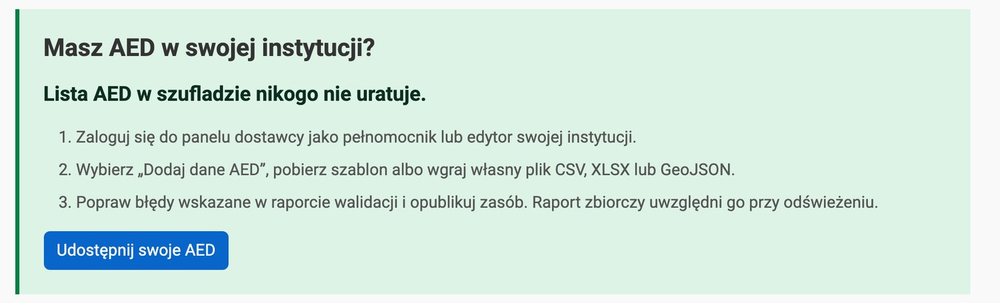
To samo hasło działa już w prototypie: sekcja strony akcji prowadzi dysponenta do kreatora.
panel dostawcy, po walidacji pliku
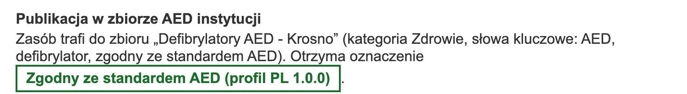
Co dostaje dysponent: oznaczenie „Zgodny ze standardem AED” przy zasobie i zieloną gminę na mapie.
Naklejka przy urządzeniu: „Ten AED jest na Mapie Serc”. Wzór z księgi znaku.
Plakat to projekt do tej prezentacji, w kolorach i kroju z księgi znaku. „Wszystkie AED pod ręką.” to obietnica dla każdego, kto szuka defibrylatora; „Lista AED w szufladzie nikogo nie uratuje.” to wezwanie do dysponentów. Kanały: pełnomocnicy ds. otwartości danych, panel dostawcy, naklejka przy urządzeniu.
11 / 15
Kryterium oceny: zgodność z tematem wyzwania, waga 15%
Do wdrożenia potrzeba decyzji operatora portalu, a nie nowego systemu.
Mechanizm korzysta z tego, co dane.gov.pl już ma: instytucji, kont pełnomocnika i edytora, zbiorów, zasobów, mapy i API. W kodzie portalu doszły 3 moduły z testami automatycznymi i 2 strony.
Kto może publikować już dziś
Każda instytucja z kontem dostawcy w dane.gov.pl. Pełnomocnik lub edytor wgrywa plik w kreatorze, bez nowego konta i bez nowego systemu.
Cztery miasta z raportu mają już swoje pliki w portalu: Krosno, Marki, Przemyśl i Legionowo.
Czego prototyp jeszcze nie daje
Drogi dla dysponenta bez konta w portalu, np. firmy, wspólnoty czy klubu. Propozycja: publikacja przez gminę albo uproszczone konto, do decyzji operatora.
Pobierania źródeł wprost z API dane.gov.pl (dziś z datowanych kopii), podłączenia do systemu 112 i potwierdzania przez dysponenta, że urządzenie działa.
Trzy następne kroki
1. Ministerstwo Cyfryzacji jako operator włącza moduły AED na testowym środowisku portalu.
2. Krosno, Marki, Przemyśl i Legionowo publikują przez kreator jako pierwsi dysponenci.
3. Prawnicy portalu rozstrzygają publikację punktów OSM na ODbL i treść informacji o danych w zgłoszeniach.
Pełna lista ograniczeń: submission/ograniczenia.md.
Obejrzyj nagranie (1 min 42 s) albo uruchom portal u siebie: kod, dane, znak i nagranie są w jednym repozytorium.
Rezultaty zadania i gdzie je znaleźć
Opis projektu
submission/opis-projektu.md
Prezentacja i nagranie demo
submission/ (PDF, MP4 1 min 42 s)
Prototyp i kod źródłowy
README.md, backend/mcod/aed_*
Wzorcowy zakres danych XLSX
aed-standard/field-dictionary.xlsx
Nazwa, hasło, logo, księga znaku
brand/
Oświadczenie o użyciu AI
submission/oswiadczenie-ai.md
Użycie AI (regulamin zadania, § 2 ust. 8). Kod modułów, wzorcowy zakres danych, pliki znaku i tę prezentację napisały narzędzia AI (Claude Code, Codex). Decyzje należały do mnie: moduł wewnątrz portalu, raport zbiorczy na wzór zbioru 4354, punkty OSM jako osobny zasób, nazwa, hasła i wariant znaku. Dane o prawdziwych urządzeniach pochodzą tylko z plików urzędów i z OpenStreetMap; AI ich nie wytwarzała.
Kod na licencji GPLv3, jak portal. Kopie danych źródłowych zachowują swoje licencje: CC0 1.0, CC BY 4.0 i ODbL 1.0.
13 / 15
Załącznik A. Kryterium oceny: zgodność z zasadami dane.gov.pl, waga 30%
Zasada po zasadzie: co jest spełnione, co częściowo, a co wymaga decyzji operatora.
Zasada portalu
Stan w prototypie
Dowód
Format do odczytu maszynowego
CSV (UTF-8, RFC 4180), GeoJSON, JSON z API; bez PDF i DOC
4 z 5 gwiazdek otwartości (slajd 5)
Metadane zbioru
Tytuł, opis, słowa kluczowe, dostawca, daty, RDF. Raport nie ma jeszcze kategorii; kreator nadaje Zdrowie
Strona zbioru (slajd 5)
Licencja danych urzędowych
Raport: CC BY 4.0. Źródła: CC0 1.0 i CC BY 4.0, w każdym rekordzie
Pole license_url
Licencja punktów OSM
ODbL 1.0 jest w opisie zasobu, ale słownik licencji portalu jej nie ma. Docelowo osobny zbiór
Opis zasobu (slajd 5)
Publikuje ten, kto odpowiada
Kreator publikuje w zbiorze instytucji. W 74 rekordach raportu dysponent jest do potwierdzenia
Slajd 4; pole source_records
Aktualność
Zadanie dzienne jest w kodzie. W demo odświeżanie jest ręczne i czyta kopie źródeł z 21.11.2026
README
Dostęp przez API portalu
/1.4/resources/{id}/data, 74 rekordy
Slajd 6
Zbiór bez danych osobowych
Rekord ma tylko kontakt instytucjonalny: bez nazwisk i prywatnych telefonów
Słownik pól
Dane zgłaszającego problem
Podpis i opcjonalny kontakt widzi tylko dysponent; usuwane po 30 dniach. Treść klauzuli i okres czekają na prawnika
Slajd 8
spełnione częściowo wymaga decyzji operatora. Dostępność: automatyczna kontrola axe-core (WCAG 2.0-2.2 A i AA) nie wykazała naruszeń w treści czterech nowych stron AED; zostały dwa zastrzeżenia do niezmienionej powłoki portalu (submission/ograniczenia.md).
14 / 15
Załącznik B. Kryterium oceny: zgodność z tematem wyzwania, waga 15%
Źródła raportu: 74 rekordy z czterech miast, każdy z adresem zbioru, datą i licencją.
Wydawca i zbiór
Rekordy
Data danych
Licencja
Co wykryła kontrola jakości
Urząd Miasta Legionowo dane.gov.pl/pl/dataset/40593
24
14.09.2026
CC0 1.0
niepełny kod TERYT (24), możliwe duplikaty (2)
Urząd Miasta Krosna dane.gov.pl/pl/dataset/3624
21
19.02.2024
CC0 1.0
bez uwag
Urząd Miejski w Przemyślu dane.gov.pl/pl/dataset/4581
21
06.11.2024
CC0 1.0
bez uwag
Urząd Miasta Marki dane.gov.pl/pl/dataset/4955
8
10.07.2025
CC BY 4.0
wiersz w jednej komórce (8), zamienione osie (7), możliwe duplikaty (2), punkt poza gminą (1)
Urząd m.st. Warszawy dane.gov.pl/pl/dataset/39512
0
-
CC BY 4.0
tylko metadane; dane za kluczem API
OpenStreetMap, osobny zasób openaedmap.org
18 298
21.11.2026
ODbL 1.0
bez telefonów i autorów edycji
Czego ten zbiór nie mówi
Żaden rekord nie potwierdza, że urządzenie istnieje i działa.
739 wpisów ze stron urzędów pominięto: nie mają licencji, a tylko 137 ma współrzędne.
Najstarsze dane są z lutego 2024.
Wynik agregacji: 74 rekordy przyjęte, 0 odrzuconych, 7 par współrzędnych naprawionych, 4 możliwe duplikaty oznaczone. Kopie źródeł z 21.11.2026, licencje w backend/data/aed/sources/LICENSES.md.